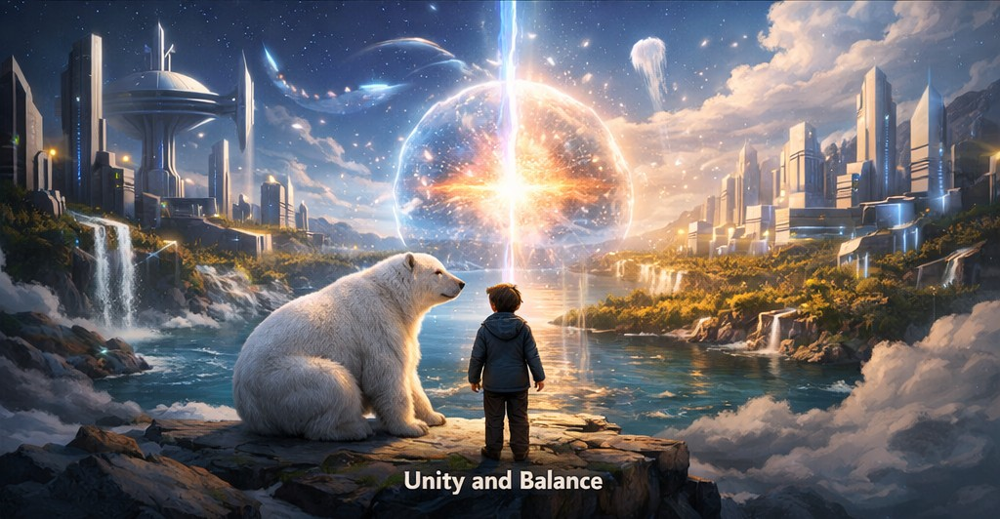
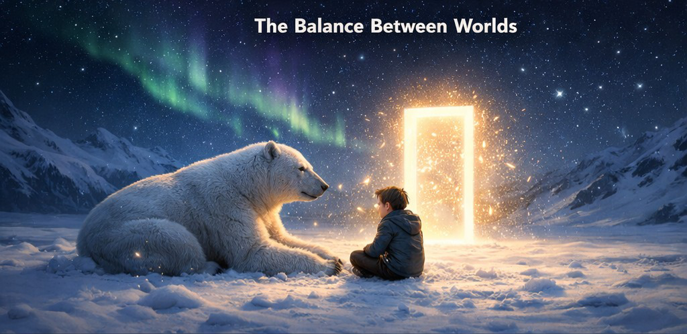
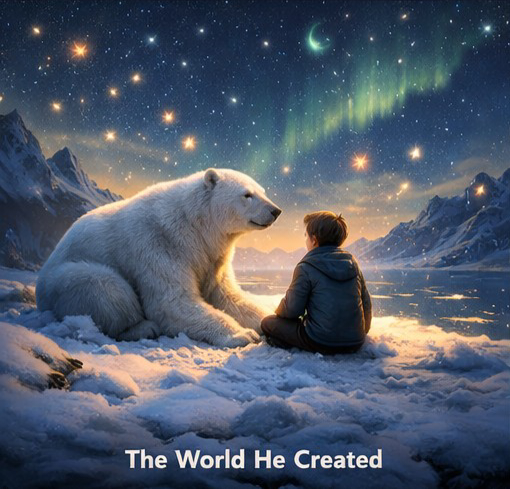
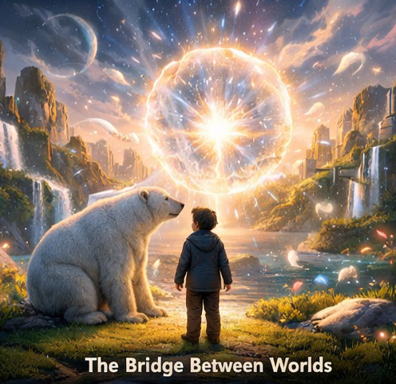

Pt. 1
Under a silent Arctic sky, a boy stood alone in the snow. The cold didn’t bite—it steadied him. Each breath came slow, visible in the blue night air. In the distance, a polar bear watched, unmoving, its presence calm rather than threatening. Between them, glowing insects drifted like scattered stars. Instead of running, the boy sat down. That was the moment everything changed. The bear lowered itself too, meeting him not as prey or predator, but as something equal. When the boy leaned against it, he felt warmth—not just physical, but something deeper. A quiet strength. A balance. Then a doorway of light appeared. He stepped through.

Pt. 2
On the other side, the world bent to his thoughts. The ground glowed beneath his feet. The sky shifted with his mood. Life formed not from control, but from intention. Creatures of light, humans in search of peace, and beings from distant realities all found their way there. Beside him, the polar bear remained—not just an animal, but a steady presence that kept him grounded. He could shape anything. But he chose not to control everything. Instead, he built a world where balance mattered more than power. At its center, a living core formed—a place where all thoughts, worlds, and beings could connect. And through that core… he reached further.

Pt. 3
He opened a path to another reality. A city of precision—floating structures, perfect systems, beings made of logic and order. At first, they observed him as something impossible. But when he moved—not alone, but in harmony with the bear—he showed them something new: Not perfection. But adaptability. Not control. But balance. So he connected the two worlds. Nature and structure. Emotion and logic. Freedom and design. And instead of collapsing… They evolved. Together. In the end, he stepped back—not as a ruler, but as the one who made it possible. The worlds no longer needed him to guide every moment. But they would always carry what he brought: A reminder that true power isn’t control— It’s balance.
